Уведомления
Вступление
Кроме Toast-уведомлений, существует также другой тип уведомлений, который выводится за пределами вашего приложения, а именно, в верхней части телефона в системной строке состояния в виде значка с небольшим текстом.
Далее пользователь должен сдвинуть строку состояния экрана, чтобы увидеть расширенную информацию об уведомлении - текст, картинку. Также можно прямо в уведомлении сделать какое-то действие - написать ответ, поставить на паузу музыку и т.п. Для привлечения внимания к уведомлению можно подключить звук и вибрацию.
Уведомление может висеть в строке состояние сколь угодно долго, пока сам пока пользователь не отреагирует на него, в отличие от Toast-сообщения, которое исчезнет через несколько секунд. В Android 5.0 добавилась возможность выводить уведомление в виде отдельного небольшого всплывающего окна (если устройство не заблокировано). В особых случаях уведомление можно выводить и на экран блокировки.
Пользователь может в настройках вашего приложения отключить уведомления в любой момент. Поэтому не стоит спамить пользователя ненужными сообщениями. Также нелишним будет проводить проверку, что уведомление будет выведено на экран.
Обратите внимание, что в имени класса спрятан кот (Notification), что намекает на целевое использование уведомлений. Уведомляйте пользователя только о самом важном, например, что пора кормить кота.
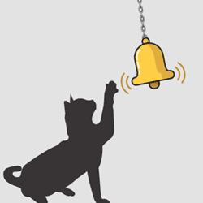Когда пользователь открывает расширенное сообщение, Android запускает объект Intent, который определён в соответствии с уведомлением. Можно также конфигурировать уведомление с добавлением звука, вибрации и мигающих индикаторов на мобильном устройстве.
Этот вид уведомления удобен в том случае, когда приложение работает в фоновом режиме и должно уведомить пользователя о каком-либо важном событии. Фоновое приложение создаёт уведомление в строке состояния, но не запускает активность самостоятельно для получения пользовательского взаимодействия. Это должен сделать только сам пользователь в удобное ему время.
Чтобы создать уведомление в строке состояния, необходимо использовать два класса:
- Notification — определяем свойства уведомления строки состояния: значок, расширенное сообщение и дополнительные параметры настройки (звук и др.)
- NotificationManager — системный сервис Android, который управляет всеми уведомлениями. Экземпляр NotificationManager создаётся при помощи вызова метода from(), а затем, когда надо показать уведомление пользователю, вызывается метод notify()
В большинстве случаев вместо Notification мы будем использовать рекомендованный NotificationCompat из AndroidX.
dependencies {
implementation("androidx.core:core-ktx:$core_version")
}
Подключать эту библиотеку нет надобности, если у вас уже используется любая библиотека из AndroidX. Скорее всего оно так и есть, в проекте по умолчанию используется androidx.appcompat:appcompat, но номера версий могут отличаться, поэтому можно добавить зависимость для страховки.
Показываем уведомление
Добавим на экран активности кнопку и напишем для демонстрации работы уведомления.
Для начала вам надо создать идентификатор уведомления. Он нужен, чтобы можно было различать уведомления друг от друга. Ведь вы можете создать идеальное приложение, которое уведомляло бы хозяина, что кота надо покормить (первое уведомление), погладить (второе уведомление), почистить лоток (третье уведомление). Если у вас будет один идентификатор, то каждое новое уведомление затрёт предыдущее и хозяин не увидит свои недоработки. Это не дело. Для идентификатора используйте какое-нибудь число. Только не надо оригинальничать, ничего не имею против числа 836, но вам определённо нужно сходить к психологу.
Также следует создать идентификатор канала. Каналы появились в API 26, но старые устройства будут просто игнорировать данный параметр при вызове конструктора NotificationCompat.Builder.
Далее формируется внешний вид и поведение уведомления через построитель NotificationCompat.Builder. Вы можете задать текст уведомления, значок, заголовок и прочие атрибуты. Для простого примера оставил минимальный набор настроек.
Выводится уведомление с помощью метода notify() - своеобразный аналог метода show() у Toast из предыдущего урока.
Не забывайте использовать вместо строк строковые ресурсы, пример лишь для знакомства.
Все примеры рассчитаны для устройств до Android 13, в котором появилось требование к разрешению. Чтобы студия не ругалась на отсутствующее разрешение, мы добавим аннотацию MissingPermission.
Cotlin
// Если этот код работает, его написал Александр Климов,
// а если нет, то не знаю, кто его писал.
package ru.alexanderklimov.notification
import android.os.Bundle
import android.widget.Button
import androidx.appcompat.app.AppCompatActivity
import androidx.core.app.NotificationCompat
import androidx.core.app.NotificationManagerCompat
class MainActivity : AppCompatActivity() {
companion object {
const val NOTIFICATION_ID = 101
const val CHANNEL_ID = "channelID"
}
@SuppressLint("MissingPermission")
override fun onCreate(savedInstanceState: Bundle?) {
super.onCreate(savedInstanceState)
setContentView(R.layout.activity_main)
val button: Button = findViewById(R.id.button)
button.setOnClickListener {
// Создаём уведомление
val builder = NotificationCompat.Builder(this, CHANNEL_ID)
.setSmallIcon(R.drawable.ic_action_cat_24dp)
.setContentTitle("Напоминание")
.setContentText("Пора покормить кота")
.setAutoCancel(true)
.setPriority(NotificationCompat.PRIORITY_DEFAULT)
val notificationManager = NotificationManagerCompat.from(this)
notificationManager.notify(NOTIFICATION_ID, builder.build())
// или
//with(NotificationManagerCompat.from(this)) {
// notify(NOTIFICATION_ID, builder.build()) // посылаем уведомление
//}
}
}
}
Java
package ru.alexanderklimov.notification;
import android.os.Bundle;
import android.view.View;
import android.widget.Button;
import androidx.appcompat.app.AppCompatActivity;
import androidx.core.app.NotificationCompat;
import androidx.core.app.NotificationManagerCompat;
public class MainActivity extends AppCompatActivity {
// Идентификатор уведомления
private static final int NOTIFY_ID = 101;
// Идентификатор канала
private static String CHANNEL_ID = "Cat channel";
@Override
protected void onCreate(Bundle savedInstanceState) {
super.onCreate(savedInstanceState);
setContentView(R.layout.activity_main);
Button button = findViewById(R.id.button);
button.setOnClickListener(new View.OnClickListener() {
@Override
public void onClick(View v) {
NotificationCompat.Builder builder =
new NotificationCompat.Builder(MainActivity.this, CHANNEL_ID)
.setSmallIcon(R.drawable.ic_pets_black_24dp)
.setContentTitle("Напоминание")
.setContentText("Пора покормить кота")
.setPriority(NotificationCompat.PRIORITY_DEFAULT);
NotificationManagerCompat notificationManager =
NotificationManagerCompat.from(MainActivity.this);
notificationManager.notify(NOTIFY_ID, builder.build());
}
});
}
}
Запустим пример и нажмём кнопку. В строке состояния появится значок. Раскроем уведомление и увидим текст. Уведомление можно смахнуть в сторону для удаления.
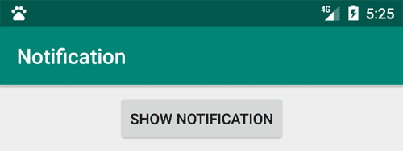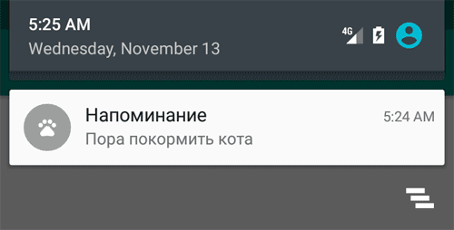
Затем можете снова нажать кнопку и создать новое уведомление. Покормили кота, снова удалили уведомление. А можете нажать несколько раз, но уведомление будет только одно. Так что, если кот научится нажимать кнопки, то не сможет создать бесконечную ленту уведомлений.
Реакция на уведомления
Нажатие на уведомление ни к чему не приведёт. Нужен дополнительный код.
Создадим новые объекты Intent и PendingIntent, которые описывают намерения и целевые действия. В нашем случае мы хотим запустить нашу активность, когда пользователь среагирует на уведомление. Присоединяем объекты через setContentIntent().
Kotlin
override fun onCreate(savedInstanceState: Bundle?) {
super.onCreate(savedInstanceState)
setContentView(R.layout.activity_main)
val intent = Intent(this, MainActivity::class.java)
intent.apply {
flags = Intent.FLAG_ACTIVITY_NEW_TASK or Intent.FLAG_ACTIVITY_CLEAR_TASK
}
val pendingIntent = PendingIntent.getActivity(this, 0, intent, 0)
val button: Button = findViewById(R.id.button)
button.setOnClickListener {
val builder = NotificationCompat.Builder(this, CHANNEL_ID)
.setSmallIcon(R.drawable.ic_pets_24dp)
.setContentTitle("Напоминание")
.setContentText("Пора покормить кота")
.setAutoCancel(true)
.setPriority(NotificationCompat.PRIORITY_DEFAULT)
.setContentIntent(pendingIntent)
with(NotificationManagerCompat.from(this)) {
notify(notificationId, builder.build()) // посылаем уведомление
}
}
}
Java
button.setOnClickListener(new View.OnClickListener() {
@Override
public void onClick(View v) {
Intent notificationIntent = new Intent(MainActivity.this, MainActivity.class);
PendingIntent contentIntent = PendingIntent.getActivity(MainActivity.this,
0, notificationIntent,
PendingIntent.FLAG_CANCEL_CURRENT);
NotificationCompat.Builder builder =
new NotificationCompat.Builder(MainActivity.this, CHANNEL_ID)
.setSmallIcon(R.drawable.ic_pets_black_24dp)
.setContentTitle("Напоминание")
.setContentText("Пора покормить кота")
.setPriority(NotificationCompat.PRIORITY_DEFAULT)
.setContentIntent(contentIntent);
NotificationManagerCompat notificationManager =
NotificationManagerCompat.from(MainActivity.this);
notificationManager.notify(NOTIFY_ID, builder.build());
}
});
Теперь можно создать уведомление и затем закрыть приложение. Если нажать на уведомление, оно откроет заново ваше приложение.
Сделаем уведомление более красивым, добавив другие необязательные настройки.
NotificationCompat.Builder builder =
new NotificationCompat.Builder(MainActivity.this, CHANNEL_ID)
.setSmallIcon(R.drawable.ic_pets_black_24dp)
.setContentTitle("Напоминание")
.setContentText("Пора покормить кота")
.setPriority(NotificationCompat.PRIORITY_DEFAULT)
.setContentIntent(contentIntent)
// необязательные настройки
.setLargeIcon(BitmapFactory.decodeResource(getResources(),
R.drawable.hungrycat)) // большая картинка
.setTicker("Последнее китайское предупреждение!") // до Lollipop
.setAutoCancel(true); // автоматически закрыть уведомление после нажатия
Теперь в уведомлении мы видим картинку. Метод setTicker() выводит сообщение в строке состояния на короткое время, а затем исчезает. Это работает только на старых устройствах и сейчас можно уже не использовать.
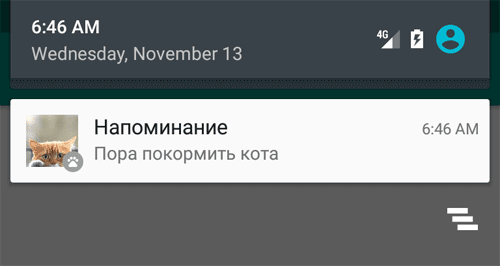
Как я уже упоминал, если вам нужно обновить уведомление, то просто ещё раз отправьте его устройству под этим же идентификатором, но с другим текстом и картинкой.
Если уведомления разного типа, то нужно обновлять идентификаторы. Вспомним урок по подсчёту ворон и изменим код.
// Kotlin
// Объявим переменную в начале класса
private var counter = 101
// Теперь у уведомлений будут новые идентификаторы
notify(counter++, builder.build());
// Java
// Объявим переменную в начале класса
private int counter = 101;
// Теперь у уведомлений будут новые идентификаторы
notificationManager.notify(counter++, builder.build());
Теперь будут появляться новые уведомления. Обычно выводятся три значка для одного приложения (на новых устройствах), потом они группируются и на экране остаётся только один значок. Проверьте самостоятельно.
Совсем не обязательно запускать своё приложение, хотя это является распространённой практикой. Можете задать нужное поведение, например, запустить свой сайт по указанному адресу. Переделаем код:
// Kotlin
val link = "http://developer.alexanderklimov.ru/android/"
val webIntent = Intent(Intent.ACTION_VIEW, Uri.parse(link))
val pendingIntent = PendingIntent.getActivity(this, 0, webIntent, 0)
val button: Button = findViewById(R.id.button)
button.setOnClickListener {
val builder = NotificationCompat.Builder(this, CHANNEL_ID)
.setSmallIcon(R.drawable.ic_action_cat)
.setContentTitle("Посетите мой сайт")
.setContentText(link)
.setContentIntent(pendingIntent)
.setDefaults(Notification.DEFAULT_SOUND)
.setAutoCancel(true)
with(NotificationManagerCompat.from(this)) {
notify(NOTIFICATION_ID, builder.build())
}
}
// Java
// код для webIntent напишите самостоятельно
NotificationCompat.Builder builder =
new NotificationCompat.Builder(MainActivity.this, CHANNEL_ID)
.setContentTitle("Посетите мой сайт")
.setContentText("http://developer.alexanderklimov.ru/android/")
.setContentIntent(pendingIntent)
.setDefaults(Notification.DEFAULT_SOUND)
.setAutoCancel(true)
.setSmallIcon(R.mipmap.ic_launcher);
NotificationManagerCompat notificationManager =
NotificationManagerCompat.from(MainActivity.this);
notificationManager.notify(NOTIFY_ID, builder.build());
Можно вывести индикатор прогресса, чтобы указать текущий ход выполнения задачи. Можно установить бесконечное выполнение:
.setProgress(100, 50, false)
Удаление собственных уведомлений
Вы можете из программы удалить своё уведомление, посланное по глупости (не вздумайте удалять уведомления про кормёжку кота!).
// Удаляем конкретное уведомление
notificationManager.cancel(NOTIFY_ID);
// Удаляем все свои уведомления
notificationManager.cancelAll();
Если уведомления с указанным идентификатором не будет, то ничего страшного при удалении не произойдёт, поэтому проверку не нужно устраивать.
Использование настроек по умолчанию
Можно добавить вибрацию, звуковой сигнал или мерцание светодиодами для ваших уведомлений при помощи настроек по умолчанию. В свойстве defaults вы можете сочетать следующие константы:
- Notification.DEFAULT_LIGHTS
- Notification.DEFAULT_SOUND
- Notification.DEFAULT_VIBRATE
Чтобы к уведомлению добавить звук и вибрации по умолчанию, используйте код:
// Kotlin
.setDefaults(Notification.DEFAULT_SOUND and Notification.DEFAULT_VIBRATE)
// Java
notification.defaults = Notification.DEFAULT_SOUND |
Notification.DEFAULT_VIBRATE;
Если хотите установить сразу все значения по умолчанию, задействуйте константу Notification.DEFAULT_ALL.
Звуковое сопровождение
Использование звуковых оповещений для уведомления пользователя о событиях, связанных с устройством (например, входящий звонок), стало привычным. Большинство стандартных событий, от входящих звонков до новых сообщений и низкого заряда батареи, объявляются с помощью звуковых мелодий. Android позволяет проигрывать любой звуковой файл на телефоне в качестве уведомления. Чтобы это сделать, нужно присвоить свойству sound путь URI:
notification.sound = ringURI;
Также можно использовать собственный звуковой файл, загруженный на устройстве или добавленный в проект в качестве ресурса.
Uri ringURI =
RingtoneManager.getDefaultUri(RingtoneManager.TYPE_NOTIFICATION);
notification.sound = ringURI;
С SD-карты:
notification.sound = Uri.parse("file:///sdcard/cat.mp3"); // если знаем точный путь!
Виброзвонок
Вы можете использовать функцию виброзвонка в телефоне, чтобы сопровождать ваше уведомление вибрацией для привлечения внимания пользователя.
Чтобы использовать виброзвонок, передайте в свойство vibrate объекта Notification массив значений типа long. Постройте массив, учитывая, что значения, отвечающие за продолжительность вибрации (в миллисекундах), чередуются со значениями, которые означают длину паузы между вибрациями.
Прежде чем использовать виброзвонок в своем приложении, необходимо получить нужные полномочия, прописав их в манифесте:
<uses-permission android:name="android.permission.VIBRATE"/>
В следующем примере показано, как изменить уведомление, чтобы одна секунда вибрации сменялась одной секундой паузы на протяжении пяти секунд:
long[] vibrate = new long[] { 1000, 1000, 1000, 1000, 1000 };
notification.vibrate = vibrate;
Светодиодная индикация
Объект Notification включает в себя свойства для настройки цвета и частоты мерцания светодиодов устройства. Здесь стоит обратить внимание, что конкретные модели устройств могут не содержать светодиодные индикаторы или иметь другие цвета.
Свойство ledARGB может устанавливать цвет для светодиодной подсветки. Свойства ledOffMS и ledOnMS позволяют регулировать частоту и поведение светодиодов. Вы можете включить светодиоды, присвоив свойству ledOnMS значение 1, а ledOffMS – 0. Присвоив им обоим значения 0, светодиоды можно выключить.
Настроив работу со светодиодами, необходимо также добавить флаг FLAG_SHOW_LIGHTS к свойству flags объекта Notification.
В следующем фрагменте кода показано, как включить на устройстве красный светодиод:
notification.ledARGB = Color.RED;
notification.ledOffMS = 0;
notification.ledOnMS = 1;
notification.flags = notification.flags | Notification.FLAG_SHOW_LIGHTS;
Текущие и настойчивые уведомления
Вы можете делать уведомления текущими и/или настойчивыми, устанавливая флаги FLAG_INSISTENT и FLAG_ONGOING_EVENT. Уведомления, помеченные как текущие, используются для представления событий, которые выполняются в данный момент времени (например, загрузка файла, фоновое проигрывание музыки). Текущие уведомления необходимы для сервисов, работающих на переднем плане. Пример установки флагов:
notification.flags = notification.flags | Notification.FLAG_ONGOING_EVENT;
В расширенной статусной строке текущие события отделены от обычных, чтобы вы сразу могли их отличить.
Настойчивые уведомления непрерывно повторяют звуковые сигналы, вибрируют и мерцают светодиодами, пока не будут остановлены. Подобные уведомления, как правило, используются для событий, которые требуют немедленного и своевременного внимания, таких как входящий звонок, срабатывание будильника или время кормёжки кота. В следующем фрагменте кода показано, как сделать уведомление настойчивым:
notification.flags = notification.flags | Notification.FLAG_INSISTENT;
В методе getActivity() может понадобиться изменить флаг, например.
PendingIntent pendingIntent = PendingIntent.getActivity(
context,
0, intent, Intent.FLAG_ACTIVITY_NEW_TASK);
Существуют и другие флаги. Хотя в большинстве случаев используется просто 0.
В Android 5.0 пользователь может установить собственный уровень оповещений, нажав на кнопки увеличения громкости на домашнем экране. Появится диалоговое окно, в котором задаётся один из трёх доступных уровней.
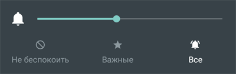
Запустить запущенную активность
Не сразу бывает заметно, но на самом деле, когда при нажатии на уведомлении у вас запускается активность, то запускается не старая активность, которая была на экране до этого, а новая. Это можно увидеть в примере, если, например, есть текстовое поле с текстом. Введите какой-нибудь текст в активности, а потом создайте уведомление, вызывающее активность. Вы увидите, что запустится новая активность с пустыми текстовым полем, хотя мы ожидали увидеть запущенную активность. Если вам нужен именно этот вариант, то используйте флаги для намерения.
Intent intent = new Intent(context, MainActivity.class);
intent.setFlags(Intent.FLAG_ACTIVITY_CLEAR_TOP
| Intent.FLAG_ACTIVITY_SINGLE_TOP);
Либо вы можете прописать в манифесте для нужной активности атрибут android:launchMode="singleTop".
Меняем цвет значка
По умолчанию, значок выводится в сером круге. Вы можете изменить цвет круга, вызвав новый метод setColor(), который появился в API 21:
NotificationCompat.Builder builder =
new NotificationCompat.Builder(MainActivity.this, CHANNEL_ID)
...
.setColor(Color.GREEN)
.build();
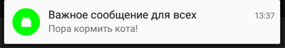
Анимированный значок для уведомления
Покажу один фокус. Возьмём код из примера и заменим одну строчку, которая отвечает за вывод маленького значка - .setSmallIcon(android.R.drawable.stat_sys_upload):
NotificationCompat.Builder builder =
new NotificationCompat.Builder(MainActivity.this, CHANNEL_ID)
.setSmallIcon(android.R.drawable.stat_sys_upload)
... // другой код
.setAutoCancel(true); // автоматически закрыть уведомление после нажатия
Запускаем код и создаём уведомление. Вы увидите, что в строке состояния выводится анимированный значок стрелки. Такой способ стоит использовать для действительно важных сообщений, чтобы понапрасну не раздражать пользователя.
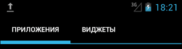
Возможно, если вы опустите метод setTicker(), то значок уже не будет анимированным, где-то работало, где-то нет. Проверяйте самостоятельно.
Вы можете попробовать поискать другие системные анимации, например, android.R.drawable.stat_sys_download или создать собственную анимацию.
<?xml version="1.0" encoding="UTF-8"?>
<animation-list android:oneshot="false"
xmlns:android="http://schemas.android.com/apk/res/android">
<item android:duration="200" android:drawable="@drawable/stat_sys_wifi_signal_1_anim0" />
<item android:duration="200" android:drawable="@drawable/stat_sys_wifi_signal_1_anim1" />
<item android:duration="200" android:drawable="@drawable/stat_sys_wifi_signal_1_anim2" />
<item android:duration="200" android:drawable="@drawable/stat_sys_wifi_signal_1_anim3" />
<item android:duration="200" android:drawable="@drawable/stat_sys_wifi_signal_1_anim4" />
<item android:duration="200" android:drawable="@drawable/stat_sys_wifi_signal_1_anim5" />
</animation-list>
На странице http://forum.xda-developers.com/showthread.php?t=1088677 энтузиасты выложили несколько готовых примеров анимации, которые можно скачать.
Расширенные возможности уведомлений
В Android 4.1 Jelly Bean появились дополнительные возможности для уведомлений через настройку стилей.
Добавьте на экран четыре кнопки.
Уведомление с тремя кнопками
Начнём с первого варианта. Теперь в уведомлениях можно размещать до трёх кнопок. Это может быть удобным, если приложение состоит из нескольких активностей или нужно предложить три разных варианта развития сценария. За появление кнопок в уведомлении отвечает метод setAction().
Intent notificationIntent = new Intent(MainActivity.this, SecondActivity.class);
PendingIntent pendingIntent = PendingIntent.getActivity(MainActivity.this,
0, notificationIntent,
PendingIntent.FLAG_CANCEL_CURRENT);
NotificationCompat.Builder builder =
new NotificationCompat.Builder(MainActivity.this, CHANNEL_ID)
.setSmallIcon(R.drawable.ic_pets_black_24dp)
.setContentTitle("Посылка")
.setContentText("Это я, почтальон Печкин. Принес для вас посылку")
.setPriority(NotificationCompat.PRIORITY_DEFAULT)
.setContentIntent(pendingIntent)
.setLargeIcon(BitmapFactory.decodeResource(getResources(),
R.drawable.hungrycat)) // большая картинка
.addAction(R.drawable.ic_lock_open_black_24dp, "Открыть", pendingIntent)
.addAction(R.drawable.ic_refresh_white_24dp, "Отказаться", pendingIntent)
.addAction(R.drawable.ic_pets_black_24dp, "Другой вариант", pendingIntent)
.setAutoCancel(true); // автоматически закрыть уведомление после нажатия
NotificationManagerCompat notificationManager =
NotificationManagerCompat.from(MainActivity.this);
notificationManager.notify(NOTIFY_ID, builder.build());
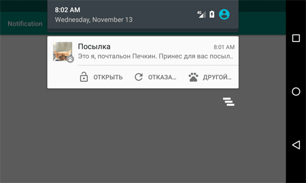
Обратите внимание, что у кнопок текст может обрезаться и пользователь не увидит текст, поэтому вам следует придумать "говорящие" значки, по которым будет понятен смысл нажатия. В нашем примере при нажатии на любой из трёх кнопок запустится вторая активность.
На некоторых устройствах можно увидеть уведомление без значков и с текстом. Также были варианты, когда выводились только значки.
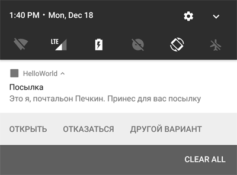
Уведомление с длинным текстом. BigTextStyle().bigText()
Если вы внимательно смотрели на уведомление, то могли увидеть, что длинный текст, помещённый в метод setContentText(), вывелся на экран не полностью. Если информация слишком важная и вам хочется её показать в уведомлении полностью, то подойдёт вариант со стилем BigTextStyle:
// Kotlin
.setStyle(NotificationCompat.BigTextStyle()
.bigText("Когда кормить будут? Далее идёт очень длинный текст про бедного котика, которого морят голодом уже целых три минуты"))
// Java
Intent notificationIntent = new Intent(MainActivity.this, SecondActivity.class);
PendingIntent pendingIntent = PendingIntent.getActivity(MainActivity.this,
0, notificationIntent,
PendingIntent.FLAG_CANCEL_CURRENT);
String bigText = "Это я, почтальон Печкин. Принёс для вас посылку. "
+ "Только я вам её не отдам. Потому что у вас документов нету. ";
NotificationCompat.Builder builder =
new NotificationCompat.Builder(MainActivity.this, CHANNEL_ID)
.setSmallIcon(R.drawable.ic_pets_black_24dp)
.setContentTitle("Посылка")
.setContentText("Это я, почтальон Печкин. Принес для вас посылку")
.setPriority(NotificationCompat.PRIORITY_DEFAULT)
.setContentIntent(pendingIntent)
.setLargeIcon(BitmapFactory.decodeResource(getResources(),
R.drawable.hungrycat)) // большая картинка
.addAction(R.drawable.ic_pets_black_24dp, "Запустить активность",
pendingIntent)
.setStyle(new NotificationCompat.BigTextStyle().bigText(bigText))
.setAutoCancel(true); // автоматически закрыть уведомление после нажатия
NotificationManagerCompat notificationManager =
NotificationManagerCompat.from(MainActivity.this);
notificationManager.notify(NOTIFY_ID, builder.build());
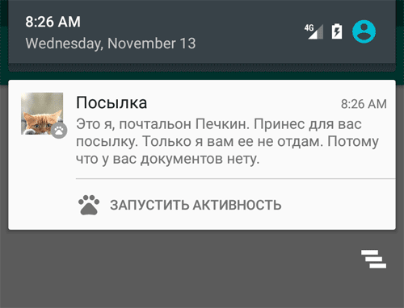
Уведомление с большой картинкой: BigPictureStyle().bigPicture()
Пример с большой картинкой аналогичен с предыдущим примером. Только мы задаём уже другой стиль для уведомления. Вместо стиля длинного текста используется стиль BigPictureStyle().bigPicture():
// Kotlin
.setStyle(
NotificationCompat.BigPictureStyle()
.bigPicture(BitmapFactory.decodeResource(resources,R.drawable.hungrycat))
.bigLargeIcon(BitmapFactory.decodeResource(resources,R.drawable.table_cat))
.setBigContentTitle("Beautiful Cat")
.setSummaryText("Голодный кот")
)
// Java
Intent notificationIntent = new Intent(MainActivity.this, MainActivity.class);
PendingIntent pendingIntent = PendingIntent.getActivity(MainActivity.this,
0, notificationIntent,
PendingIntent.FLAG_CANCEL_CURRENT);
NotificationCompat.Builder builder =
new NotificationCompat.Builder(MainActivity.this, CHANNEL_ID)
.setSmallIcon(R.drawable.ic_pets_black_24dp)
.setContentTitle("Посылка")
.setContentText("Это я, почтальон Печкин. Принёс для вас посылку")
.setPriority(NotificationCompat.PRIORITY_DEFAULT)
.setContentIntent(pendingIntent)
.setLargeIcon(BitmapFactory.decodeResource(getResources(),
R.drawable.hungrycat)) // большая картинка
.addAction(R.drawable.ic_pets_black_24dp, "Запустить активность",
pendingIntent)
// большая картинка из ресурсов
.setStyle(new NotificationCompat.BigPictureStyle()
.bigPicture(BitmapFactory.decodeResource(getResources(),
R.drawable.hungrycat)))
.setAutoCancel(true); // автоматически закрыть уведомление после нажатия
NotificationManagerCompat notificationManager =
NotificationManagerCompat.from(MainActivity.this);
notificationManager.notify(NOTIFY_ID, builder.build());
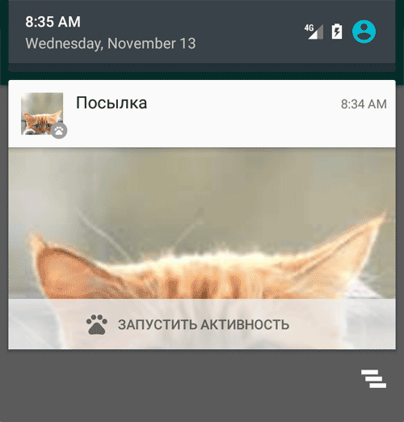
Слишком большая картинка будет обрезана.
Уведомление в стиле InboxStyle
Есть ещё один стиль InboxStyle, напоминающий стиль писем в папке Входящие. Стиль разместит до пяти ваших строк в виде списка. Весь код приводить не буду, меняется только вызов setStyle()
// Kotlin
.setStyle(
NotificationCompat.InboxStyle()
.addLine("This is first line")
.addLine("This is second line")
.addLine("This is third line")
.addLine("This is fourth line")
.addLine("This is fifth line")
.setBigContentTitle("This is Content Title.")
.setSummaryText("This is summary text.")
)
// Java
...
.setStyle(new NotificationCompat.InboxStyle()
.addLine("Первое сообщение").addLine("Второе сообщение")
.addLine("Третье сообщение").addLine("Четвертое сообщение")
.setSummaryText("+2 more"))
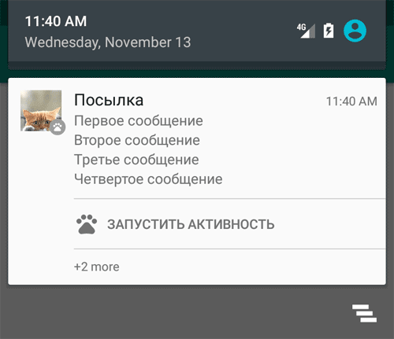
Уведомление в стиле мессенджера: MessagingStyle
Стиль MessagingStyle пригодится для отображения сообщений из мессенджера или чата. Появился в Android Nougat.
// Kotlin
button.setOnClickListener {
val sender = Person.Builder()
.setName("Мурзик")
//.setIcon(...) // можно добавить значок
.build()
val messagingStyle = NotificationCompat.MessagingStyle(sender)
.addMessage("Хозяин, когда кормить будут?", Date().time, sender)
val builder = NotificationCompat.Builder(this, "Cat channel")
.setSmallIcon(R.drawable.ic_pets_black_24dp)
.setStyle(messagingStyle)
val channel = NotificationChannel("Cat channel", "channel", NotificationManager
.IMPORTANCE_DEFAULT).apply {
description = "Feed cat"
}
with(NotificationManagerCompat.from(this)) {
createNotificationChannel(channel)
notify(notificationId, builder.build())
}
}
// Java
Intent notificationIntent = new Intent(MainActivity.this, SecondActivity.class);
PendingIntent pendingIntent = PendingIntent.getActivity(MainActivity.this,
0, notificationIntent,
PendingIntent.FLAG_CANCEL_CURRENT);
Person murzik = new Person.Builder().setName("Мурзик").build();
Person vaska = new Person.Builder().setName("Васька").build();
NotificationCompat.MessagingStyle messagingStyle = new NotificationCompat.MessagingStyle
(murzik)
.setConversationTitle("Android chat")
.addMessage("Привет котаны!", System.currentTimeMillis(), murzik)
.addMessage("А вы знали, что chat по-французски кошка?", System
.currentTimeMillis(),
murzik)
.addMessage("Круто!", System.currentTimeMillis(),
vaska)
.addMessage("Ми-ми-ми", System.currentTimeMillis(), vaska)
.addMessage("Мурзик, откуда ты знаешь французский?", System.currentTimeMillis(),
vaska)
.addMessage("Шерше ля фам, т.е. ищите кошечку!", System.currentTimeMillis(),
murzik);
NotificationCompat.Builder builder =
new NotificationCompat.Builder(MainActivity.this, CHANNEL_ID)
.setSmallIcon(R.drawable.ic_pets_black_24dp)
.setContentIntent(pendingIntent)
.addAction(R.drawable.ic_pets_black_24dp, "Запустить активность",
pendingIntent)
.setStyle(messagingStyle)
.setAutoCancel(true); // автоматически закрыть уведомление после нажатия
NotificationManagerCompat notificationManager =
NotificationManagerCompat.from(MainActivity.this);
notificationManager.notify(NOTIFY_ID, builder.build());
В конструкторе MessagingStyle вы должны указать имя текущего пользователя, который будет видеть свои сообщения.
У класса Person есть другие полезные методы: setIcon() (значок), setData() (картинки) и др.
В setConversationTitle() указываем название беседы, удобно при разговоре двух и более котов. В поздних версиях не имеет эффекта, можно убрать.
Разговор строится через цепочку вызовов методов addMessage(), в которых указывается текст сообщения, время, отправитель. Количество сообщений может быть любым. При большом количестве (задано в MessagingStyle.MAXIMUM_RETAINED_MESSAGES) старые сообщения начнут удаляться автоматически.
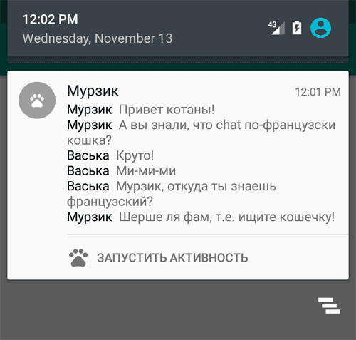
Подводя итоги, следует отметить, у уведомлений очень много методов, которые можно использовать в своём приложении. Вот как может выглядеть полный набор:
new Notification.Builder(this.getApplicationContext())
.setAutoCancel(boolean autoCancel)
.setContent(RemoteViews views)
.setContentInfo(CharSequence info)
.setContentIntent(PendingIntent intent)
.setContentText(CharSequence text)
.setContentTitle(CharSequence title)
.setDefaults(int defaults)
.setDeleteIntent(PendingIntent intent))
.setFullScreenIntent(PendingIntent intent, boolean highPriority)
.setLargeIcon(Bitmap icon)
.setLights(int argb, int onMs, int offMs)
.setNumber(int number)
.setOngoing(boolean ongoing)
.setOnlyAlertOnce(boolean onlyAlertOnce)
.setPriority(int pri)
.setProgress(int max, int progress, boolean indeterminate)
.setShowWhen(boolean show)
.setSmallIcon(int icon, int level)
.setSmallIcon(int icon)
.setSound(Uri sound)
.setSound(Uri sound, int streamType)
.setStyle(Notification.Style style)
.setSubText(CharSequence text)
.setTicker(CharSequence tickerText, RemoteViews views)
.setTicker(CharSequence tickerText)
.setUsesChronometer(boolean b)
.setVibrate(long[] pattern)
.setWhen(long when)
.addAction(int icon, CharSequence title, PendingIntent intent)
.build()
- setSmallIcon() устанавливает маленький значок, который выводится в строке состояния, а также в правой части открытого уведомления.
- setLargeIcon() устанавливает большой значок, который выводится в открытом уведомлении слева.
- setWhen() определяет время для уведомления, по умолчанию время создания уведомления
- setTicker() выводит временную строку в строке состояния, которая затем исчезает. Остаётся только маленький значок (см. выше)
- setNumber() добавляет число справа от уведомления (не везде работает)
- setShowWhen() - показывать ли время в уведомлении (в Android 7.0 по умолчанию не показывается)
- setUsesChronometer() выводит счётчик вместо времени, показывающий сколько прошло от времени when. Полезно для уведомления секундомера или звонка
- setContentInfo() добавляет текст справа от уведомления (в новых версиях сверху)
- setColor() закрашивает значок и название приложения указанным цветом
- setOngoing() выводит уведомление поверх обычных уведомлений, такое уведомление нельзя закрыть или смахнуть.
- setVibrate() - виброзвонок
- setSound() - звук
- setLights() - цвет LED-индикатора
- setPriority() устанавливает приоритет от -2 (NotificationCompat.PRIORITY_MIN) до 2 (NotificationCompat.PRIORITY_MAX)
- setTimeoutAfter() (появилось в API 26) - устанавливает таймаут, после которого уведомление удалится
- setProgress() - индикатор прогресса
Приоритет
Не все уведомления одинаковы важны. Например, напоминание о том, что пора кормить кота - это сверхважное сообщение (не обсуждается). Угроза землетрясения, цунами, урагана - тоже очень важные сообщения. Новые версии программы, новое письмо и т.д. - не слишком важные уведомления, которые можно почитать после того, как покормили кота.
В API 16 появился новый метод setPriority() с константами по мере увеличения: NotificationCompat.PRIORITY_MIN, NotificationCompat.PRIORITY_LOW, NotificationCompat.PRIORITY_DEFAULT, NotificationCompat.PRIORITY_HIGH, NotificationCompat.PRIORITY_MAX.
...
.setPriority(NotificationCompat.PRIORITY_HIGH)
...
.build();
Чем выше приоритет уведомления, тем выше он находится среди остальных уведомлений. Таким образом, важные сообщения всегда будут наверху, даже если поступили позже других менее важных сообщений. Не злоупотребляйте этой возможностью и трезво оцените важность вашего уведомления.
В Android 5.0 произошли небольшие изменения в поведении. Если установлены максимальные приоритеты Notification.PRIORITY_HIGH или Notification.MAX, то при вызове сначала уведомление появится в виде плавающего окна в верхней части экрана, а только потом закроется и останется в виде стандартного уведомления в строке состояния.
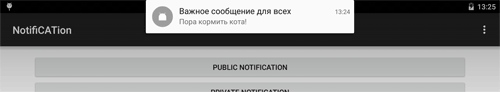
В Android 8.0 вместо приоритетов стали использовать важность - IMPORTANCE_XXX.
Напоследок дам совет - читайте документацию. Google постоянно вносит какие-то изменения и добавления. Практически в каждой новой версии Android что-то менялось. Я не в состоянии отслеживать новинки и оперативно добавлять в статью.
Пример изменений, которые произошли в API 23:
- Удалили метод setLatestEventInfo()
- Добавили новые методы getLargeIcon() и getSmallIcon()
- Добавили новое поле класса CATEGORY_REMINDER и объявили устаревшими поля icon и largeIcon.
В уведомлениях можно использовать собственный макет, используя RemoteViews. Для стилизации макета изучите классы DecoratedCustomViewStyle и DecoratedMediaCustomViewStyle. Подключается через метод setCustomContentView().
RemoteViews remoteViews = new RemoteViews(context.getPackageName(), R.layout.notification_custom_view);
remoteViews.setImageViewResource(R.id.image_icon, iconResource);
remoteViews.setTextViewText(R.id.text_title, title);
remoteViews.setTextViewText(R.id.text_message, message);
remoteViews.setImageViewResource(R.id.image_end, imageResource);
Notification.Builder builder = new Notification.Builder(context)
.setSmallIcon(R.drawable.ic_phonelink_ring_primary_24dp)
.setCustomContentView(remoteViews)
.setStyle(new Notification.DecoratedCustomViewStyle());
.setAutoCancel(true);
В уведомлениях появилась возможность вводить собственный текст для ответа на какое-то сообщение. Для этого используется механизм Direct Reply, который использует RemoteInput API.
NotificationListenerService. Прослушка уведомлений
В API 18 (Android 4.3) появился новый класс NotificationListenerService, позволяющий следить за уведомлениями. С тех пор я не следил за этой темой. Материал был написан по горячим следам в 2015 году. Если не работает, то разбирайтесь самостоятельно.
Новый класс является службой, которая получает сигналы от системы, когда появляются или удаляются уведомления. Таким образом вы можете отслеживать не только свои уведомления (они и так вам известны), но и уведомления от других приложений. Это может быть полезным для каких-то расширений к приложениям.
Вам нужно наследоваться от данного класса, зарегистрировать его в манифесте с разрешением BIND_NOTIFICATION_LISTENER_SERVICE и включить в него специальный фильтр намерения.
У службы есть два метода onNotificationPosted() и onNotificationRemoved() с параметром StatusBarNotification, который содержит полезные методы об уведомлении.
- getId()
- getNotification()
- getPackageName()
- getPostTime()
- isClearable()
- isOngoing()
Пользователь должен явно разрешить приложению следить за уведомлениями через Настройки | Безопасность. Если на устройстве нет приложений, которые следят за уведомлениями, то в настройках вы не увидите никаких пунктов о разрешении. Когда вы создадите такое приложение, то там появится новый пункт Доступ к уведомлениям.
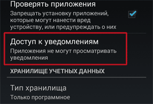
Щёлкнув на нём, вы попадёте на страницу со списком программ, желающих следить за уведомлениями. Поставим флажок у своей программы.
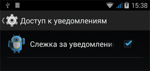
Получим предупреждение.
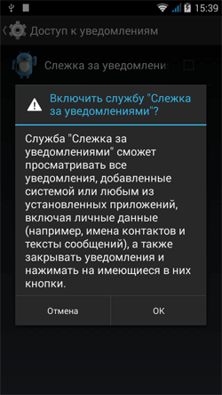
После этого в настройках будет указано число приложений, имеющих соответствующее разрешение.
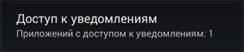
Перейдём к практической части. Подготовим разметку из нескольких кнопок и текстовой метки для вывода информации.
<LinearLayout xmlns:android="http://schemas.android.com/apk/res/android"
xmlns:tools="http://schemas.android.com/tools"
android:layout_width="match_parent"
android:layout_height="match_parent"
android:orientation="vertical"
android:paddingBottom="@dimen/activity_vertical_margin"
android:paddingLeft="@dimen/activity_horizontal_margin"
android:paddingRight="@dimen/activity_horizontal_margin"
android:paddingTop="@dimen/activity_vertical_margin"
tools:context=".MainActivity">
<Button
android:id="@+id/buttonCreateNotification"
android:layout_width="wrap_content"
android:layout_height="wrap_content"
android:onClick="onButtonClicked"
android:text="Создать уведомление" />
<Button
android:id="@+id/buttonListNotification"
android:layout_width="wrap_content"
android:layout_height="wrap_content"
android:onClick="onButtonClicked"
android:text="Список уведомлений" />
<Button
android:id="@+id/buttonClearNotification"
android:layout_width="wrap_content"
android:layout_height="wrap_content"
android:onClick="onButtonClicked"
android:text="Очистить все уведомления" />
<ScrollView
android:layout_width="match_parent"
android:layout_height="match_parent">
<TextView
android:id="@+id/textView"
android:layout_width="match_parent"
android:layout_height="wrap_content"
android:text="NotificationListenerService Example"
android:textAppearance="?android:attr/textAppearanceMedium" />
</ScrollView>
</LinearLayout>
Создадим новую службу.
package ru.alexanderklimov.testapplication;
import android.content.BroadcastReceiver;
import android.content.Context;
import android.content.Intent;
import android.content.IntentFilter;
import android.service.notification.NotificationListenerService;
import android.service.notification.StatusBarNotification;
import android.util.Log;
public class NLService extends NotificationListenerService {
private String TAG = this.getClass().getSimpleName();
private NLServiceReceiver mReceiver;
@Override
public void onCreate() {
super.onCreate();
mReceiver = new NLServiceReceiver();
IntentFilter filter = new IntentFilter();
filter.addAction("ru.alexanderklimov.NOTIFICATION_LISTENER_SERVICE_EXAMPLE");
registerReceiver(mReceiver, filter);
}
@Override
public void onDestroy() {
super.onDestroy();
unregisterReceiver(mReceiver);
}
@Override
public void onNotificationPosted(StatusBarNotification sbn) {
Log.i(TAG, "onNotificationPosted");
Log.i(TAG, "ID :" + sbn.getId() + "\\t" + sbn.getNotification().tickerText + "\\t" + sbn.getPackageName());
Intent intent = new Intent("ru.alexanderklimov.NOTIFICATION_LISTENER_EXAMPLE");
intent.putExtra("notification_event", "onNotificationPosted:\\n" + sbn.getPackageName() + "\\n");
sendBroadcast(intent);
}
@Override
public void onNotificationRemoved(StatusBarNotification sbn) {
Log.i(TAG, "onNOtificationRemoved");
Log.i(TAG, "ID :" + sbn.getId() + "\\t" + sbn.getNotification().tickerText + "\\t" + sbn.getPackageName());
Intent intent = new Intent("ru.alexanderklimov.NOTIFICATION_LISTENER_EXAMPLE");
intent.putExtra("notification_event", "onNotificationRemoved:\\n" + sbn.getPackageName() + "\\n");
sendBroadcast(intent);
}
class NLServiceReceiver extends BroadcastReceiver {
@Override
public void onReceive(Context context, Intent intent) {
if (intent.getStringExtra("command").equals("clearall")) {
NLService.this.cancelAllNotifications();
} else if (intent.getStringExtra("command").equals("list")) {
Intent notificationIntent = new Intent("ru.alexanderklimov.NOTIFICATION_LISTENER_EXAMPLE");
notificationIntent.putExtra("notification_event", "=======");
sendBroadcast(notificationIntent);
int i = 1;
for (StatusBarNotification sbn : NLService.this.getActiveNotifications()) {
Intent infoIntent = new Intent("ru.alexanderklimov.NOTIFICATION_LISTENER_EXAMPLE");
infoIntent.putExtra("notification_event", i + " " + sbn.getPackageName() + "\\n");
sendBroadcast(infoIntent);
i++;
}
Intent listIntent = new Intent("ru.alexanderklimov.NOTIFICATION_LISTENER_EXAMPLE");
listIntent.putExtra("notification_event", "Notification List");
sendBroadcast(listIntent);
}
}
}
}
В манифесте добавляем новый блок.
<service android:name=".NLService"
android:label="@string/app_name"
android:permission="android.permission.BIND_NOTIFICATION_LISTENER_SERVICE">
<intent-filter>
<action android:name="android.service.notification.NotificationListenerService" />
</intent-filter>
</service>
Код для кнопок:
package ru.alexanderklimov.testapplication;
import android.app.NotificationManager;
import android.content.BroadcastReceiver;
import android.content.Context;
import android.content.Intent;
import android.content.IntentFilter;
import android.os.Bundle;
import android.support.v4.app.NotificationCompat;
import android.support.v7.app.ActionBarActivity;
import android.view.View;
import android.widget.TextView;
public class MainActivity extends ActionBarActivity {
private TextView mInfoTextView;
private NotificationBroadcastReceiver mReceiver;
public void onCreate(Bundle savedInstanceState) {
super.onCreate(savedInstanceState);
setContentView(R.layout.activity_main);
setTitle("NotificationListenerService Demo");
mInfoTextView = (TextView) findViewById(R.id.textView);
mReceiver = new NotificationBroadcastReceiver();
IntentFilter filter = new IntentFilter();
filter.addAction("ru.alexanderklimov.NOTIFICATION_LISTENER_EXAMPLE");
registerReceiver(mReceiver, filter);
}
@Override
protected void onDestroy() {
super.onDestroy();
unregisterReceiver(mReceiver);
}
public void onButtonClicked(View view){
if(view.getId() == R.id.buttonCreateNotification){
NotificationManager manager = (NotificationManager) getSystemService(NOTIFICATION_SERVICE);
NotificationCompat.Builder builder = new NotificationCompat.Builder(this);
builder.setContentTitle("Важное уведомление");
builder.setContentText("Пора кормить кота!");
builder.setTicker("Хозяин, проснись!");
builder.setSmallIcon(R.drawable.ic_launcher);
builder.setAutoCancel(true);
manager.notify((int) System.currentTimeMillis(), builder.build());
}
else if(view.getId() == R.id.buttonClearNotification){
Intent intent = new Intent("ru.alexanderklimov.NOTIFICATION_LISTENER_SERVICE_EXAMPLE");
intent.putExtra("command", "clearall");
sendBroadcast(intent);
}
else if(view.getId() == R.id.buttonListNotification){
Intent intent = new Intent("ru.alexanderklimov.NOTIFICATION_LISTENER_SERVICE_EXAMPLE");
intent.putExtra("command", "list");
sendBroadcast(intent);
}
}
class NotificationBroadcastReceiver extends BroadcastReceiver {
@Override
public void onReceive(Context context, Intent intent) {
String temp = intent.getStringExtra("notification_event") + "\\n" + mInfoTextView.getText();
mInfoTextView.setText(temp);
}
}
}
Первая кнопка запускает уведомление, чтобы увидеть, что приложение работает. Если вы хотите увидеть, как приложение следит за другими уведомлениями, то запустите Play Market и скачайте какую-нибудь игру или программу. Во время скачивания и установки генерируются уведомления. На следующем скриншоте видны уведомления от приложения Загрузки во время скачивания (com.android.providers.downloads) и от процесса установки (com.android.vending).

Если вы помните, в предупреждающем сообщении говорилось о возможности удалять уведомления. Третья кнопка позволяет это сделать. Вот почему эта настройка относится к разделу безопасности - ваша программа может удалять поступающие уведомления без ведома владельца устройства.
Вы можете программно запустить раздел с разрешением на использование службы.
// API 22
Intent intent = new Intent(Settings.ACTION_NOTIFICATION_LISTENER_SETTINGS);
if (intent.resolveActivity(getPackageManager()) != null) {
startActivity(intent);
}
В API 19 появился более широкий доступ к элементам уведомления. Поэтому через метод sbn.getNotification() вы можете получить объект класса Notification и вытащить из него картинки (Large Icon), текст и т.д.
Notification mNotification=sbn.getNotification();
Bundle extras = mNotification.extras;
String notificationTitle = extras.getString(Notification.EXTRA_TITLE);
int notificationIcon = extras.getInt(Notification.EXTRA_SMALL_ICON);
Bitmap notificationLargeIcon =
((Bitmap) extras.getParcelable(Notification.EXTRA_LARGE_ICON));
CharSequence notificationText = extras.getCharSequence(Notification.EXTRA_TEXT);
CharSequence notificationSubText = extras.getCharSequence(Notification.EXTRA_SUB_TEXT);